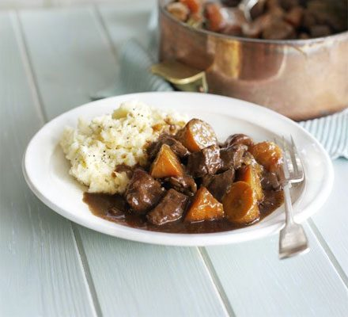

Beef & Stout Stew

Description
Sweet, slow-cooked melty carrots and beautifully tender meat, this dish is comfort in a pot.
Ingredients
- 2 tbsp vegetable oil
- 1kg stewing beef, cut into large chunks
- 1 onion, roughly chopped
- 10 carrots, cut into large chunks
- 2 tbsp plain flour
- 500ml can Guinness
- 1 beef stock cube
- pinch of sugar
- 3 bay leaves
- big thyme sprig
Method
- Heat oven to 160C/140C fan/gas 3. Heat the oil in large lidded casserole dish, brown the meat really well in batches, then set aside. Add the onion and carrots to the dish, give them a good browning, then scatter over the flour and stir. Tip the meat and any juices back into the dish and give it all a good stir. Pour over the Guinness and crumble in the stock cube. Season the stew with salt, pepper and a pinch of sugar. Tuck in the herbs and bring everything to a simmer.
- Cover with a lid and place in the oven for about 2½ hrs until the meat is really tender. The stew can now be chilled and frozen for up to 3 months – defrost completely before reheating until piping hot. Leave the stew to settle a little, then serve with Creamy parsnip mash for a true celebration of winter vegetables.
Home